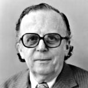
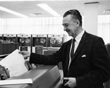
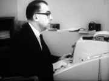
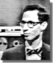
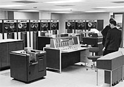
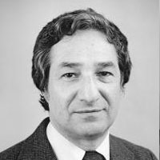
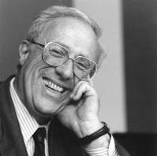

Loading
Introduction
This article describes MIT's Project MAC, the organization that led the initial creation of Multics. This is not a comprehensive history of Project MAC: my goal is to provide context and motivation for Multics history, and to provide accurate statements and references for deeper investigation. (The author was a part-time undergraduate programmer and then a research staff member at Project MAC during its first seven years.)
Background
MIT environment
MIT's first digital computer,  Whirlwind, was built at MIT after World War II, for the US Navy and Air Force.
The MIT Libraries has a
Whirlwind, was built at MIT after World War II, for the US Navy and Air Force.
The MIT Libraries has a  collection of historical material about the computer.
collection of historical material about the computer.
 Whirlwind began as a project for the US Navy to create a digital flight simulator for bomber crews.
It was then adapted for realtime use, processing air defense radar for the US Air Force.
Computer core memory was first developed for Whirlwind by Jay Forrester.
Whirlwind began as a project for the US Navy to create a digital flight simulator for bomber crews.
It was then adapted for realtime use, processing air defense radar for the US Air Force.
Computer core memory was first developed for Whirlwind by Jay Forrester.
MIT had a tradition of cooperation with the US government.
Members of the MIT faculty and  administration served on government commissions and boards,
and MIT professors, staff, and students did government research,
in peacetime as well as
administration served on government commissions and boards,
and MIT professors, staff, and students did government research,
in peacetime as well as  wartime.
wartime.

Lick
Joseph C. R. Licklider, who had created a psychology group in the MIT Electrical Engineering department,
was involved in the beginning of  MIT Lincoln Labs, which undertook US Air Force projects on air defense in the 1950s.
Licklider's group found that analog computing was not adequate for brain modeling, and became interested in digital computing.
Licklider left MIT in 1957 to join the research firm Bolt, Beranek and Newman (BBN), where he fell in love with computers.
He learned to program a Digital Equipment PDP-1 and used it in his research and other activities.
This led to his writing his history-making paper "Man-Computer Symbiosis" in March 1960 [lick-sym]
MIT Lincoln Labs, which undertook US Air Force projects on air defense in the 1950s.
Licklider's group found that analog computing was not adequate for brain modeling, and became interested in digital computing.
Licklider left MIT in 1957 to join the research firm Bolt, Beranek and Newman (BBN), where he fell in love with computers.
He learned to program a Digital Equipment PDP-1 and used it in his research and other activities.
This led to his writing his history-making paper "Man-Computer Symbiosis" in March 1960 [lick-sym]
MIT users of Whirlwind became a community of researchers interested in computers.
Whirlwind was supported by the US government, but not classified; MIT's Lincoln Laboratory carried out classified projects using it.
The  TX-0 computer was a conversion of the Whirlwind design from vacuum tubes to transistors, begun in 1955 at MIT Lincoln Laboratory.
TX-0 was "loaned" to the MIT EE department in 1958, and housed in MIT Building 20.
The machine continued to be modified.
It provided direct conversational access to the computer for researchers and students.
[jbd-inter]
TX-0 computer was a conversion of the Whirlwind design from vacuum tubes to transistors, begun in 1955 at MIT Lincoln Laboratory.
TX-0 was "loaned" to the MIT EE department in 1958, and housed in MIT Building 20.
The machine continued to be modified.
It provided direct conversational access to the computer for researchers and students.
[jbd-inter]
In the 1950s and early 1960s, it wasn't clear where computers fit into existing academic courses. Many academics didn't believe that "computer science" should be viewed as a discipline, any more than "slide rule science." The computer was seen as a tool, rather than an interesting subject in itself. John McCarthy and Fernando Corbató were young MIT professors of Electrical Engineering who became interested in computers in the 1950s. The late Robert M. Fano, a full professor of Electrical Engineering, had made major contributions to information theory, and wrote the standard text on electromagnetic theory. [fca] While looking for new research to pursue, Fano attended a course in computing given by Corby and McCarthy about 1960.
Prof. Fano's Charles Babbage Institute interview with Arthur Norberg is a first-hand account of the creation of time-sharing and Project MAC. [fano-inter]
MIT Computation Center
In 1950, Provost Julius Stratton formed the Committee on Machine Methods of Computation
to study the introduction of computers for general use by faculty and students at the Massachusetts Institute of Technology (MIT).
-- John Krige [krige]

Prof. P. M. Morse, bldg 26
 Prof. Philip M. Morse was the chairman of the committee.
The committee recommended construction of a Computation Center for MIT.
The design of MIT's new building for electrical engineering, the
Prof. Philip M. Morse was the chairman of the committee.
The committee recommended construction of a Computation Center for MIT.
The design of MIT's new building for electrical engineering, the  Karl Taylor Compton Laboratories (building 26), was modified to add the first floor computer room.
Construction of the building, partly supported by funds from IBM, began in 1955 and was completed in 1957.
Prof. Morse became director of the
Karl Taylor Compton Laboratories (building 26), was modified to add the first floor computer room.
Construction of the building, partly supported by funds from IBM, began in 1955 and was completed in 1957.
Prof. Morse became director of the  MIT Computation Center in 1957: it operated an IBM 704. IBM owned and maintained the computer hardware.
The use of the machine was donated: one shift was for MIT, one shift was for the 40-some-odd New England Colleges and Universities, and one shift was retained for IBM to use.
The unspecified fourth shift (i.e. weekends), and any unused time on other shifts, was used by MIT. [fjc-mail]
The 704 was replaced by an IBM 709 in 1960.
In 1962, the 709 was moved to MIT Building 10, and an IBM 7090 was installed in the Building 26 computer room.
That computer was updated to an IBM 7094 in 1964. An IBM 360/65 was installed in 1966.
The TX-0 was moved to the second floor of Building 26 by 1961,
and a DEC PDP-1 was added in the adjoining office.
MIT Computation Center in 1957: it operated an IBM 704. IBM owned and maintained the computer hardware.
The use of the machine was donated: one shift was for MIT, one shift was for the 40-some-odd New England Colleges and Universities, and one shift was retained for IBM to use.
The unspecified fourth shift (i.e. weekends), and any unused time on other shifts, was used by MIT. [fjc-mail]
The 704 was replaced by an IBM 709 in 1960.
In 1962, the 709 was moved to MIT Building 10, and an IBM 7090 was installed in the Building 26 computer room.
That computer was updated to an IBM 7094 in 1964. An IBM 360/65 was installed in 1966.
The TX-0 was moved to the second floor of Building 26 by 1961,
and a DEC PDP-1 was added in the adjoining office.
Computers in the Early 60s
Computers were very expensive and scarce at the end of the 1950s. Transistors were replacing vacuum tubes for logic; core memory replaced delay lines and drum storage for program data. Computer systems were built from discrete components soldered to circuit boards, which were often interconnected by wire-wrapped backplanes. The high cost of computers meant that organizations needed to use them as efficiently as possible, with a minimum of unproductive idle time.
Operating systems began as an attempt to use computer resources efficiently. An OS that kept the computer busy saved money. Operating systems also provided services so programmers didn't have to re-invent their own, e.g. tape error recovery, reducing the cost of programming and the time to implement new software.
Time-Sharing
At the beginning of the 60s, computing at MIT was done interactively on computers dedicated to a single user at a time (Whirlwind, TX-0, PDP-1), or by using batch processing on mainframes (704, 709, 7090, 7094). Time-sharing a single computer among multiple users was proposed as a way to provide interactive computing to more than one person at a time, in order to support more people and to reduce the amount of time programmers had to wait for results. MIT Prof. John McCarthy was one of the first to propose the idea; he wrote a memo to Philip Morse in 1959 proposing time-sharing for MIT's 709. [jmc-memo]
Several teams based in the Boston area began experimenting with time-sharing systems.
McCarthy proposed modifications to MIT's IBM 704 that would operate it in "time stealing" mode and interrupt the batch processing stream with interactive jobs.
This facility was demonstrated in 1960. [jmc-rem]
MIT Prof. Fernando Corbató, the assistant director of the MIT Computation Center,
led a small group of programmers in a project that demonstrated time-sharing on MIT's IBM 709 computer.
This system was known as the  Compatible Time-Sharing System (CTSS),
since the time-sharing environment and the batch processing environment
shared the system resources, and programs written for batch could be run under time-sharing.
This system was demonstrated in November 1961 serving four interactive users and swapping to tape. [ctss]
At BBN, McCarthy, Licklider, and Ed Fredkin created a time-sharing system that ran on a modified Digital PDP-1 computer.
This system was finished in September 1962.
The MIT Electrical Engineering department also obtained a PDP-1 computer from Digital,
and Prof. Jack Dennis and his students built a time-sharing system for it and demonstrated it in 1962.
Compatible Time-Sharing System (CTSS),
since the time-sharing environment and the batch processing environment
shared the system resources, and programs written for batch could be run under time-sharing.
This system was demonstrated in November 1961 serving four interactive users and swapping to tape. [ctss]
At BBN, McCarthy, Licklider, and Ed Fredkin created a time-sharing system that ran on a modified Digital PDP-1 computer.
This system was finished in September 1962.
The MIT Electrical Engineering department also obtained a PDP-1 computer from Digital,
and Prof. Jack Dennis and his students built a time-sharing system for it and demonstrated it in 1962.
The MIT administration created a Long Range Computation Study Group, which produced a report dated April, 1961.
The leaders of this study group were professors Albert Hill,  Robert Fano, and Philip Morse.
The study group created a technical subcommittee that included professors Corbató, McCarthy, Minsky, Dennis, and Ross; Prof. Herbert Teager was the chair.
They visited computer manufacturers, but found that none were interested in offering a time-sharing system.
The study group's report proposed obtaining a large computer system for MIT and modifying it to support time-sharing. [fano-inter]
Robert Fano, and Philip Morse.
The study group created a technical subcommittee that included professors Corbató, McCarthy, Minsky, Dennis, and Ross; Prof. Herbert Teager was the chair.
They visited computer manufacturers, but found that none were interested in offering a time-sharing system.
The study group's report proposed obtaining a large computer system for MIT and modifying it to support time-sharing. [fano-inter]
Corbató's group at the MIT Computation Center continued to improve CTSS during 1962 and 1963. Many features were added to the system hardware and software, and a user manual was written. [ctss-man1] Experimentation and refinement of the scheduler and increasing the number of users to 25 were especially important.
Computer Utility

John McCarthy at 7094 [Stanford photo]
John McCarthy proposed the idea of a computer utility in his 1961 lecture, "Time-sharing Computer Systems." [jmc-utility] The vision was that computing power would be provided on demand by a community utility to geographically distributed users, similar to electric utilities. McCarthy gave a speech at celebrations for MIT's centennial in 1961 in which he said
"If computers of the kind I have advocated become the computers of the future, then computing may someday be organized as a public utility just as the telephone system is a public utility... The computer utility could become the basis of a new and important industry." -- MIT centennial 1961, John McCarthy talk on time-sharing [simson]
The computer utility concept was advocated by Prof. Martin Greenberger of the MIT Sloan School of Management
in an article in the Atlantic Monthly titled  "The Computers of Tomorrow" (May 1964).
Prof. Fano published a paper in the 1967 IEEE Joint Computer Conference titled "The computer utility and the community".
"The Computers of Tomorrow" (May 1964).
Prof. Fano published a paper in the 1967 IEEE Joint Computer Conference titled "The computer utility and the community".
US Military environment
The success of the Soviet Union in launching the first satellite, Sputnik I, in 1957
led to political assertions in the United States that it was losing the "space race"
and falling behind Russia in technology.
"In 1958, President Dwight Eisenhower appointed MIT President James Killian as Presidential Assistant for Science
and created the  Advanced Research Projects Agency (ARPA) to jump-start U.S. technology and find safeguards against a space-based missile attack."
The first director of ARPA was GE vice-president Roy W. Johnson.
ARPA had generous funding available and focused on supporting fundamental advances in science and engineering.
ARPA partnered with academic researchers to advance the state of the art in multiple fields.
Advanced Research Projects Agency (ARPA) to jump-start U.S. technology and find safeguards against a space-based missile attack."
The first director of ARPA was GE vice-president Roy W. Johnson.
ARPA had generous funding available and focused on supporting fundamental advances in science and engineering.
ARPA partnered with academic researchers to advance the state of the art in multiple fields.
Computing was one area that ARPA chose to explore.
In 1962, Jack P. Ruina, director of ARPA, established the  Information Processing Techniques Office (IPTO).
(He later became a professor of Electrical Engineering at MIT and an MIT Vice President.)
J. C. R. Licklider was the first director of IPTO.
He accepted the position with ARPA on his condition that he would be allowed to implement the vision of interactive computing and time-sharing.
[hauben-netizens]
Licklider chose to devote substantial funding to a few "centers of excellence" in the area of time-sharing.
[lick-inter]
Information Processing Techniques Office (IPTO).
(He later became a professor of Electrical Engineering at MIT and an MIT Vice President.)
J. C. R. Licklider was the first director of IPTO.
He accepted the position with ARPA on his condition that he would be allowed to implement the vision of interactive computing and time-sharing.
[hauben-netizens]
Licklider chose to devote substantial funding to a few "centers of excellence" in the area of time-sharing.
[lick-inter]
"A consummate political operator,
Licklider convinced his superiors to establish within ARPA the Information Processing Techniques Office (IPTO)
with a budget that eventually exceeded that of all other sources of US public research funding for computing combined."
-- Campbell-Kelly, Aspray, Ensmenger, Yost [aspray] p. 208
The Cuban Missile crisis of October 1962 was another world event that motivated technological change. The crisis, which some commentators felt had nearly caused a global atomic war, showed that the US military's Pentagon's Command and Control facilities were not as rapid and reliable as they should be. [slayton]
The story I heard was that the Cuban missile crisis in 1961 had shocked the Pentagon
because they discovered that many their information systems were practically unusable.
They couldn't get information fast enough and they were crashing.
It was just a mess.
They were so shocked that they had such poor man-machine interaction with their computers,
their communication systems and their databases and the like
that they wanted to start research trying to improve on this and get better tools for the military's purposes.
So that's how Lick got recruited down to Washington.
-- F. J. Corbató [fjc-shw-inter]

Prof. R. M. Fano using CTSS
An unclassified meeting was held at meeting at the Old Homestead in Hot Springs, Virginia, organized for the Air Force by the MITRE Corporation, in November 1962. Professor Fano chaired a session on communication. Other sessions were on Command and Control and computer networking. According to Fano, "Licklider's point was that those things ought to be done with a time-sharing system." [fano-inter]
Initial Suggestion
In November 1962, J. C. R. Licklider suggested to Professor Fano that IPTO fund a project whose goal was to bring together the many researchers at MIT interested in computers, including those interested in artificial intelligence and computer operating systems.
The single activity which may have been crucial to the instigation of Project
MAC was a train ride between Hot Springs, Va., and Washington, D.C.
In the leisurely pace of both 1962 and the American South, J.C.R. Licklider and Robert Fano had the opportunity for a meeting of the minds.
An apparently reluctant participant, Fano found himself as the logical choice to be the director of this much larger project,
and therefore the one to produce a proposal which would justify Licklider's confidence in asking MIT to continue the work not only on time-sharing,
but also on the wider use of computers in an interactive environment. Fano prepared a proposal between Thanksgiving (November) 1962 and New Year's Day 1963.
-- JAN Lee, "Project MAC", [lee-mac]
Licklider proposed $2 million in 1963 and $3 million the following year, if Fano could figure out how to spend it all. [simson]
"The Project MAC Interviews" in IEEE Annals of the History of Computing gives many details of the beginnings of Project MAC. [lee-mac] Chapter 6 of Ronda and Michael Hauben's Netizens describes CTSS and the beginnings of Project MAC at MIT. [hauben-netizens] Simson Garfinkel's Architects of the Information Society, [MIT Press 1999, 0-262-07196-7] also describes the genesis of Project MAC.
The Proposal for Project MAC
Fano took the MIT Long Range Computation Study Group report and used it as part of the MIT proposal to IPTO. The proposal had three goals: 1) time-sharing 2) a community using it and 3) education, which meant supporting research projects. The proposal stated:
The broad, long-term objective of the program is the evolutionary development of a computer system easily and independently accessible to a large number of people and truly flexible and responsive to individual needs. An essential part of this objective is the development of improved input, output and display equipment, of programming aids, of public files and subroutines, and of the overall operational organization of the system. A second, concomitant, objective is the fuller exploration of computers as aids to research and education, through the promotion of closer man-machine interaction. The second objective is not only important by itself, but is also essential to the development of the computer system envisioned above, and vice versa. The third objective, which must be part of any university activity, is the long-range development of national manpower assets through education in the pertinent area: of faculty as well as of students, and outside M.I.T. as well as within the confines of the campus. Again, this third objective is inextricably interwoven with the preceding two, because people's approach to problems will have to evolve in parallel with the computer hardware and software.
One question was where to house this project. Fortunately, MIT had invested in a new office complex just off campus, known as Technology Square, and space was available there.
I found out later that [Dean of Engineering] Gordon Brown told his secretary to file it under "FF", meaning "Fano's Folly".
-- Prof. Fano [fano-inter]
MAC stood for Multiple Access Computing to the members of the Computer Systems Research group, and Machine Aided Cognition to the AI Lab researchers. The name was chosen at a dinner party. [fano-inter]
Project MAC was designated a "project" rather than a "laboratory," to emphasize that participants would continue to be members of their current departments and laboratories.
As Fano describes in an interview [fano-inter], the MIT administration approved his proposal quickly. The MIT proposal was submitted to ARPA on January 1, 1963. IPTO accepted the proposal. Funding was authorized March 1, 1963. $2,220,000 was awarded by ONR on behalf of ARPA.
Project MAC officially started on July 1, 1963. Dick Mills writes:
My second major project in the job that was shortly after labelled "Assistant Director of Project MAC" was to major domo the Summer Study (my first was to run the acquisition of former CEIR space in 545 Technology Square, lay out and partition those empty floors into computer and office spaces, procure and install the Red Machine and all of the office furnishings -- racing the SS start date).
Summer Study
Project MAC began with a 6-week Summer Study in July and August 1963, exposing 57 visiting researchers from universities, government, and industry to the MIT Computation Center's CTSS time-sharing system, which ran on an IBM 7090 modified with hardware RPQs, and the SDC time-sharing system on the AN/FSQ-32. (Corby and John McCrthy were members of a 1962 ARPA Technical Advisory Group for the SDC time-sharing system.) The Summer Study was suggested to Prof. Fano by Licklider. [lick-fano-bio] Oliver Selfridge ran the Summer Study and was then Associate Director of Project MAC until 1965. [ogs-obit]
One of Lick's suggestions with which I am personally familiar proved to be particularly valuable
(he encouraged or persuaded people, but never told them what they should do).
He suggested that it would be a good idea to start Project MAC with a summer study with participants from major computer research laboratories.
There were many meetings and a lot of discussion during the two-month study,
with a few memoranda being written. However, no report was ever prepared,
because there was no significant new conclusion or recommendation to be presented and,
moreover, no formal report was expected. The summer study turned out to be a great "get acquainted party,"
where participants got to know one another and had the opportunity to become familiar with two large,
recently completed time-sharing systems that were available for their individual use:
one developed at the MIT Computation Center and the other developed at the System Development Corporation.
The study certainly helped to get the IPTO program on its way, and that was just what Lick had in mind.
-- R. M. Fano [lick-fano-bio]
Study participants had offices in the new Technology Square building and used the Comp Center CTSS via Teletypes. (They accessed the SDC machine using TWX terminals.)
XXX
(nobody seems to have a list of who attended)
Names trawled from Progress Report I:
 Gene Amdahl,
Arnold A. Cohen,
Arnold Dumey,
Gene Amdahl,
Arnold A. Cohen,
Arnold Dumey,
 Doug Engelbart [dce-hist],
Ed Fredkin,
Doug Eastwood,
Jerry Elkind,
Ted Glaser,
Bob Graham,
Martin Greenberger,
Doug Engelbart [dce-hist],
Ed Fredkin,
Doug Eastwood,
Jerry Elkind,
Ted Glaser,
Bob Graham,
Martin Greenberger,
 Norm Hardy [nh-mail],
Francis F. Lee,
George A. Michael,
George A. Miller,
Marvin Minsky,
U. Neisser,
D. K. Pollock,
Nat Rochester?,
Art Rosenberg,
J. A. Rusling,
Norm Hardy [nh-mail],
Francis F. Lee,
George A. Michael,
George A. Miller,
Marvin Minsky,
U. Neisser,
D. K. Pollock,
Nat Rochester?,
Art Rosenberg,
J. A. Rusling,
 Jean Sammet,
Jean Sammet,
 Art Samuel,
R. F. Simmons,
R. L. Sisson,
K. Smith,
Vic Vyssotsky,
Art Samuel,
R. F. Simmons,
R. L. Sisson,
K. Smith,
Vic Vyssotsky,
 Joe Weizenbaum,
Joe Weizenbaum,
 Maurice Wilkes,
Victor Yngve,
Douwe Yntema,
Maurice Wilkes,
Victor Yngve,
Douwe Yntema,
Several people from the Summer Study were recruited to permanent positions at Project MAC, including Ted Glaser, Bob Graham, and Joe Weizenbaum.
The Summer Study participants also made some use of SDC's Q/32 time-sharing system (also funded by ARPA) via TWX.
Project MAC Startup

Corby, 1963
(Just before the Summer Study started, in May 1963, Corby was taped by WGBH demonstrating CTSS for the "MIT Science Reporter" program.)
A computer room was set up on the west half of the 9th floor of Tech Square, with raised flooring and extra air conditioning. Project MAC administration offices were on the 8th floor, as were offices for professors and graduate students. Later, the Computer Systems Research Group offices were on the 5th floor.
Project MAC had ordered an IBM 7094, identical to the Computation Center's configuration, from IBM as soon as funding was approved, but the computer was not available by the time the Summer Study started. Instead, the Summer Study participants dialed into the MIT Computation Center 7090 and used that copy of CTSS, while the computer continued to provide standard FMS batch service to MIT users. MAC's own 7094 was delivered in October 1963, and CTSS came up in November 1963. (The Computation Center's computer was upgraded to a 7094 in 1964.)
Project MAC Accomplishments
Project MAC produced a yearly Progress Report summarizing its activities. These reports are available from www.dtic.mil, the US government Defense Technical Information Center (DTIC). Many Project MAC records are lost (including those stored in the basement of 545 Technology Square when a pipe broke in the 1970s).
Goals
The broad goal of Project MAC is the experimental investigation of new ways in which on-line use of computers
can aid people in their individual intellectual work, whether research, engineering design, management, or education.
One envisions an intimate collaboration between man and computer system
in the form of a real-time dialogue where both parties contribute their best capabilities.
Thus, an essential part of the research effort is the evolutionary development of a large,
multiple-access computer system that is easily and independently accessible to a large number of people,
and truly responsive to their individual needs.
-- Project MAC Progress Report I
Project MAC Timeline
| Year | staff | budget $M |
Director | Progress Report |
MIT Theses |
MAC TRs & TMs |
External Publications |
Internal Reports |
Notes |
|---|---|---|---|---|---|---|---|---|---|
| 1963-64 | 301 | $2.2 | Fano | I | 9 | 31 | 151 | 7094 installed | |
| 1964-65 | 338 | $ | Fano | II | 67 | 18 | 47 | 47 | GE selected; BTL joins |
| 1965-66 | 475 | $ | Fano | III | 48 | 12 | 68 | 65 | 635 installed; Multics papers |
| 1966-67 | 400 | $ | Fano | IV | 44 | 12 | 107 | 35 | 645 delivered |
| 1967-68 | 361 | $ | Licklider | V | 36 | 11 | 121 | 29 | |
| 1968-69 | 233 | $ | Licklider | VI | 27 | 13 | 54 | 7094 to IPC, BTL leaves | |
| 1969-70 | 440 | $4.3 | Licklider | VII | 11 | 15 | 22 | Multics to IPC, ARPANet | |
| 1970-71 | 327 | $ | Fredkin | VIII | 40 | Honeywell | |||
| 1971-72 | 325 | $ | Fredkin | IX | 8 | 9 | 6 | ||
| 1972-73 | $ | Fredkin | X | Multics product | |||||
| 1973-74 | 275 | $3.0 | Fredkin | XI | 9 | 12 | 13 | CTSS shutdown; UNIX paper |
Budget figures come from various sources and may be inaccurate. Staff and publication counts are derived from the Project MAC Progress Reports. (DTIC does not have a copy of PR10 online.) In different years, different numbers were reported: for instance, many MIT theses were also MAC TRs or TMs. Some years listed undergraduate students and others did not. People sometimes switched roles so these numbers will be somewhat imprecise.
Funding
Project MAC was a large and well-funded effort. Its initial grant from DARPA for a little over $2 million per year was quickly raised.
Funding peaked at $4.3 million in 1969, slumped to under $3 million in 1973, and rose again in the late 1970s.
Project MAC's research staff peaked in 1967 at 400.
-- Kenneth Flamm, Targeting the Computer [Flamm]
The initial Project MAC contract (renewable 3 years ahead) had a yearly budget of 3 millions,
except something less for the first year because ARPA had run out of money.
The AI Lab had a separate contract for some reason I never understood
(I suspected that somebody did not trust me to give enough money to the AI Lab).
-- R. M. Fano, personal communication, Aug 2014
Initial funding for Project MAC was provided by the ARPA Information Processing Techniques Office. In subsequent years, funding came from NSF and other agencies as well. According to the National Academy of Sciences report Academic Careers For Experimental Computer Scientists And Engineers, ARPA contributed $2 million per year to project MAC for eight years for Multics development. During this time period, Bell Labs and GE/Honeywell also contributed resources to the development of Multics.
ARPA expenditures for MAC are estimated from MIT records as about $25M for the 1963-70 period.
-- DARPA Technical Accomplishments [darpa-acc]
Computer Systems Research
About a third of Project MAC research was devoted to providing multiple-access computer systems to researchers.
CTSS Enhancement and Utilization
Initially, the Computer Systems Research Group focused on stabilizing, extending, and enhancing the Compatible Time-Sharing System (CTSS), which had been developed by Professor Corbató's group at the MIT Computation Center, and was running on the Comp Center 7094. During 1963 - 1965, Project MAC staff exploited and improved CTSS to the point where it was run as a service for the MIT computing community, providing interactive computing and permanent file storage on disk backed up to tape, over dial-up Teletype and IBM terminals. MAC personnel made major improvements to CTSS in the areas of:

Project MAC's IBM 7094, 545 TS
- scheduling algorithms (Greenberger-Corbató exponential)
- system performance measurement and tuning
- CTSS new file system: linking, permission and revocation
- online backup while the system was running
- security, including passwords
- TYPSET and RUNOFF for document markup and formatting
- MAIL and instant messaging
- decentralized management
- a second edition of the user manual [ctss-man2]
The user community contributed many suggestions and programs to CTSS. By the end of 1966, about half the CTSS commands were user-developed.
A movie clip from 1964 of Professor Fano
 describing time-sharing and using CTSS on a Model 35 Teletype is available on YouTube.
in 1966, Scientific American featured Project MAC in the September issue devoted to computer science.
It was later published in book form. [sci-am]
describing time-sharing and using CTSS on a Model 35 Teletype is available on YouTube.
in 1966, Scientific American featured Project MAC in the September issue devoted to computer science.
It was later published in book form. [sci-am]
In 1966-67, over 3000 hours of 7094 time were charged to the user community, which numbered about 350.
The average user of the system had about 35 files totaling 160 records, and 30 links in his file directory;
these averages remained quite constant through the year.
-- Project MAC Progress Report IV
[I think I wrote this sentence -- thvv]
Project MAC researchers used CTSS for general time-sharing and Multics development. When the MIT Information Processing Center obtained an IBM 360/65, it phased its batch processing service over to OS/360 and closed down its IBM 7094. Project MAC's 7094 was moved to MIT IPC in 1968, and Multics developers switched over to use of Multics as the system became self-supporting; IPC continued to operate CTSS until July 1973. Several groups at MAC obtained their own computers and stopped using CTSS, such as the Dynamic Modeling Group in 1968.
Multics Development
Multics History is described in detail in other pages of multicians.org. Here is a brief summary for coherence.
From the beginning of Project MAC, it was understood that the Computer Systems Research Group planned to build a second-generation time-sharing system, based on the lessons learned from CTSS, and overcoming its major limitations: aging computer technology; limits on the ability to add memory, peripherals, and CPUs; inability to run continuously; and a polling driven architecture.
Planning for Multics and conversations with vendors had begun before Project MAC was established. Further visits to vendors were made in 1963, and specifications were sent inviting proposals. GE was selected as the system vendor in August 1964. Bell Telephone Laboratories became associated with the project in November 1964, at the suggestion of J. C. R. Licklider. In 1965 a set of conference papers were written for the 1965 Fall Joint Computer Conference describing plans to build Multics, using CTSS as a development tool.
For details on Multics development in the 60s, see The GE-635s at Project MAC and BTL.
Multics took longer to build and cost more than anticipated, by about a factor of two, for multiple reasons. Crucial hardware and software components were delivered later than planned; system performance and stability were problems. A 1968 ARPA review committee, originally expected to recommend the cancellation of Multics, endorsed the continuation of development. Bell Laboratories withdrew from the Multics project in April 1969. (The author worked at MIT Information Processing Center in 1968-1974 and at Honeywell CISL from 1974-1981.)
Multics finally became a service open to all MIT Information Processing Center customers on October 1, 1969, and MIT IPC took over operational responsibility for MAC's GE-645 computer, which remained in Technology Square. The number of registered user accounts on the IPC Multics increased rapidly in the first years of availability, as MIT departments moved their research projects' computer usage from CTSS to Multics. The IPC Multics service grew rapidly and its revenue began to pay back startup costs by mid 1971. Project MAC staff continued to work on improving Multics, along with IPC staff and General Electric (and its successor Honeywell) personnel.

Ed Fredkin, director 1971-1974
Leadership of the Multics effort passed from Project MAC to Honeywell during the early 1970s. In 1973, Honeywell announced that Multics would be a commercial product, supported on a new hardware implementation, the Honeywell 6180.
As the Multics development effort has tapered off,
the Computer Systems Research Group has shifted its attention to security and protection in computer systems.
In conjunction with Honeywell, inc.,
new follow-on hardware for Multics was specified,
which is especially tailored to make Multics secure and efficient.
This will be in operation early in 1973.
-- Project MAC Progress Report IX
Some Project MAC work on Multics with Honeywell on Multics security enhancements continued until 1977, supported by Honeywell Federal Systems. Prof. Jerry Saltzer worked with Mike Schroeder, Dave Clark, and others on restructuring the Multics kernel and closing security holes.
MIT IPC operated its Multics installation from 1969 until 1988, first on the GE-645 in Tech Square, and then on a Honeywell 6180 at IPC. Multics was installed at over 80 sites, and the OS was used by GE/Honeywell customers from 1969 to 2000. Bell Laboratories researchers who worked on Multics in collaboration with Project MAC went on to create the Unix time-sharing system, a major influence on many of today's computer operating systems.
Stories from Project MAC Computer Systems Research
- Project MAC Recollections, Peter Denning
- Early Days of Multics and Performance, John Gintell
- The Origin of the Shell, Louis Pouzin
- How Many Users?, Tom Van Vleck
- Low Bottle Pressure, Tom Van Vleck
- Phase One, Tom Van Vleck
- Security, Tom Van Vleck
Artificial Intelligence Laboratory
Another third of the Project MAC resources went to the Artificial Intelligence Group, which emphasized high-powered interactive access for a smaller group of people interested in problems of human intelligence.
The AI Lab was founded as the AI project in 1959 by John McCarthy and Marvin Minsky.
The very comprehensive paper  "A Marriage of Convenience: the Founding of the MIT Artificial Intelligence Laboratory"
prepared for MIT course 6.933J/STS.420J, Structure of Engineering Revolutions,
describes the evolution of the AI Lab and of computing at MIT.
"A Marriage of Convenience: the Founding of the MIT Artificial Intelligence Laboratory"
prepared for MIT course 6.933J/STS.420J, Structure of Engineering Revolutions,
describes the evolution of the AI Lab and of computing at MIT.
The AI Lab had its own computer, a Digital PDP-6, later supplemented by a PDP-10. They also had interesting peripherals connected to these machines for research in vision and robotics. (The "Minsky arm" is on display at the MIT Museum.) The AI Lab created its own operating system, the Incompatible Timesharing System (ITS), very different in philosophy from CTSS and Multics. [dee] [greenblatt]
The first half of Steven Levy's book Hackers[levy] may be accurate regarding the AI Lab in the 1960s, but his statements about the rest of Project MAC at the time vary significantly from my recollections. The book apparently relies on interviews with some AI Lab participants.
Computation Structures Group
Prof. Jack Dennis led the Computation Structures Group, which investigated the interplay of computer architecture and dataflow-oriented computer languages, as well as asynchronous packet routing networks, table-driven compilers, fault tolerance, working sets, and parallel computation.
Support for Other Research
About a third of Project MAC resources were devoted to providing funding and interactive terminal access to computing for researchers in many subjects, by exploiting and enhancing the CTSS time-sharing system begun at the MIT Computation Center. Some of the initial Project MAC projects covered:
- Algol Extended for Design (AED) language (ESL, Doug Ross)
- Braille terminal (MIT Sensory Aids Center, George Dalrymple)
- COGO language (Dan Roos)
- Communications simulation (Prof. Ithiel Pool)
- Computer architecture research and multiprogramming semantics (Prof. Jack Dennis)
- Computer-aided ship design
- Electronic Systems Laboratory (ESL) Display, known as the Kludge (John Ward)
- Job shop simulation (Prof. Donald Carroll)
- Library Automation: Project TIP (Prof. Carl Overhage, Meyer Kessler)
- MATHLAB/MACSYMA/MACLISP (AI Lab)
- Molecular biology using the ESL display (Prof. Cyrus Levinthal) [cy]
- Natural language problem solving (Daniel Bobrow)
- OPS-1 language for management simulation (Sloan School, Prof. Martin Greenberger)
- Plasma beam display (Jim Mills)
- Plasma beam dynamics (Prof. A. Bers)
- Programs for Physical Problems (Betty Campbell, Carla Marceau, Martha Pennell)
- Project Scheduling system
- Proof Mechanization (David Luckham)
- Railway engineering systems (Luttrell, Ditmeyer)
- Semantic Information Retrieval (Bert Raphael)
- MacAIMS Relational database (Bob Goldstein)
- STRUDL and COGO Civil Engineering languages (Biggs, Logcher)
- Scheduling algorithms (Dick Kain, David Kuck)
- Simulation of computer systems (Allan Scherr)
- Simulation of time-sharing systems (Earl Van Horn)
- Social system analysis (Prof. Ithiel Pool)
- Soil Engineering Problem Oriented Language (SEPOL) (Schiffman, Beckreck)
- Speech analysis (John Heinz)
- Stock trading simulation (R. W. Spitz)
- Structural Engineering Systems Solver (STRESS), (Prof. Biggs, Prof. Logcher)
- Text to speech (Prof. Francis F. Lee)
- Theorem proving (Tim Hart)
- Transportation and highway systems
- Circuit design loading (ESL)
- Marketing modeling
- Nuclear reactor design
- Performance analysis of a mainframe with an attached PDP-8 (Jerry Grochow)
- Ship loading (ESL)
- Storage tube displays, such as the ARDS (Rob Stotz)
- Traffic simulation
Networking
"One of the great unanticipated discoveries of Project MAC was that when more than one person can use a computer at the same time, those people will use the computer to communicate with each other." -- Simson Garfinkel, Architects of the Information Society
Licklider had articulated a vision of networked computers as far back as 1962, when he published papers on the "Intergalactic Computer Network." His 1968 paper, "The Computer as a Communication Device," led to the creation of the ARPANet. Project MAC carried out computer networking experiments in the 60s and created a Computer Networks group in 1969, to allow people on different computers to share information. Substantial participation in ARPANet design and implementation by members of the Computer Systems Research Group began in 1969.
MIT Laboratory for Computer Science (LCS)

Mike Dertouzos, director 1974-2001
In 1970, the Artificial Intelligence Laboratory split off from Project MAC. In 1975, Project MAC was renamed the MIT Laboratory for Computer Science (LCS).
The first director of LCS was Prof. Michael Dertouzos, who led the Laboratory from 1974 until his untimely death in 2001. Prof. Victor Zue was director from 2001-2003.
MIT professor Peter Szolovitz re-created a  1975 LCS brochure giving an overview of the Laboratory.
1975 LCS brochure giving an overview of the Laboratory.
LCS research
In 1974-75, LCS had 7 major funding sources: DARPA, ONR, NSF, USAF (RADC), HEW, IBM, and Honeywell. [source?]
In the 1980s, LCS researchers made major contributions to Project Athena, a joint project by MIT, Digital Equipment, and IBM, which created a computer-utility-like campus-wide network of thousands of computers. LCS members also contributed to the development and release of the X Window System during the 1980s and 1990s, and led the development of the Kerberos authentication system. LCS researchers also contributed to the theory of cryptography, electronic voting, and secure information exchange.
A major research thrust for LCS beginning in the late 1990s was a project called  "Oxygen",
which focused on pervasive human-centered computing.
The project envisioned hand-held computing devices called "handy21s" that would let people communicate from wherever they were.
These devices would accept speech and visual input, and provide access to applications, data, GPS, cameras, and user private data.
"Oxygen",
which focused on pervasive human-centered computing.
The project envisioned hand-held computing devices called "handy21s" that would let people communicate from wherever they were.
These devices would accept speech and visual input, and provide access to applications, data, GPS, cameras, and user private data.
A  list of LCS Technical Reports is available at CSAIL's website.
It includes Project MAC technical reports, renumbered to have LCS numbers.
list of LCS Technical Reports is available at CSAIL's website.
It includes Project MAC technical reports, renumbered to have LCS numbers.
MIT Computer Science and AI Laboratory (CSAIL)
 CSAIL was established in 2003, reuniting LCS with the AI Laboratory.
In 2004, CSAIL moved to a brand new Frank Gehry-designed building complex, the Stata Center, which includes the Gates Tower.
Rodney Brooks was the first director, followed by professors Victor Zue, Anant Agrawal, and Daniela Rus.
CSAIL was established in 2003, reuniting LCS with the AI Laboratory.
In 2004, CSAIL moved to a brand new Frank Gehry-designed building complex, the Stata Center, which includes the Gates Tower.
Rodney Brooks was the first director, followed by professors Victor Zue, Anant Agrawal, and Daniela Rus.
The  CSAIL timeline documents the history of computing research at MIT, from the 1940s to the present.
CSAIL timeline documents the history of computing research at MIT, from the 1940s to the present.
MIT CSAIL also provides a useful web page about  CSAIL Multics Documents.
CSAIL Multics Documents.
Reunions
The author has attended three Project MAC reunions at MIT. All were very enjoyable.
Project MAC 25th anniversary, October 1988.
Project MAC 35th anniversary, April 1999.
Project MAC 50th anniversary and Multics Reunion, May 2014.
REFERENCES
- [fano-encyc] Fano, R. M., "Project MAC", in Encyclopedia of Computer Science and Technology, Vol 12, Marcel Dekker Inc, 1979
- [flamm] Flamm, Kenneth, Targeting the Computer: Government Support and International Competition, Washington, DC; Brookings Institution, 1987, pp. 42-92.
- Norberg, Arthur and Judy O'Neill, Transforming Computer Technology (Johns Hopkins Press, 1996)
- [aspray] Campbell-Kelly, Aspray, Ensmenger, Yost Computer: A History of the Information Machine (Basic Books, 1996)
- [darpa-acc] Reed, Sidney G., VanAtta, Richard H., and Deitchman, Seymour J., DARPA Technical Accomplishments: An Historical Review of Selected DARPA Projects, Volume I, IDA PAPER P-2192. [http://www.dod.mil/pubs/foi/Science_and_Technology/DARPA/301.pdf]
- [dce-hist] Engelbart, Doug, Workstation History and the Augmented Knowledge Workshop, Dec 1985. [http://www.dougengelbart.org/pubs/augment-101931/print-1.html]
- [dee] Eastlake, D. E. (1972) ITS Status Report. MIT A.I. Laboratory, Artificial Intelligence Memo No. 238. [ftp://publications.ai.mit.edu/ai-publications/pdf/AIM-238.pdf]
- [cy] Francoeur, Eric, "Cyrus Levinthal, the Kluge and the origins of interactive molecular graphics," Endeavour Vol. 26(4) 2002 http://production.rbvi.ucsf.edu/home/tef/pubs/EndeavourVol26Issue4Pgs127-131.pdf
- [fjc-mail] Corbató, F. J., personal communication, Aug 2014.
- [greenblatt] Greenblatt, Richard, Oral History of Richard Greenblatt, January 12, 2005, http://archive.computerhistory.org/projects/chess/related_materials/oral-history/greenblatt.oral_history.2005.102634500/102657935-05-01-acc.pdf
- [hauben-netizens] Hauben, Michael, Netizens, http://www.columbia.edu/~hauben/netbook/
- [krige] Krige, John, American Hegemony and the Postwar Reconstruction of Science in Europe, MIT Press, 2008. isbn=0262263416
- [levy] Levy, Steven, Hackers. Penguin Books, 1994.
- [lick-comm] Licklider, J. C. R., "The Computer as a Communication Device," Science and Technology, April 1968
- [lick-fano-bio] Fano, R. M., "J. C. R. Licklider" in Biographical Memoirs V.75. Washington, DC: The National Academies Press, 1998. http://books.nap.edu/openbook.php?record_id=9649&page=190
- [lick-inter] Aspray, William and Norberg, Arthur. An Interview with J.C.R. Licklider. Charles Babbage Institute (10/28/1988). http://conservancy.umn.edu/handle/107436
- [lick-ol] Licklider, J. C. R. and Clark, W. E., "On-Line Man-Computer Communication," Proceedings Spring Joint Computer Conference, Vol. 21, pp. 113-128, 1962.
- [lick-sym] Licklider, J. C. R., "Man-Computer Symbiosis," IRE Transactions on Human Factors in Electronics (March 1960). http://groups.csail.mit.edu/medg/people/psz/Licklider.html
- [nh-mail] Hardy, Norman, personal communication, Aug 2014.
- [ogs-obit] Oliver Selfridge obituary, May 27, 2011, http://www.geni.com/people/Oliver-Selfridge-PhD-a-founding-father-of-Artificial-Inteligence/6000000011627494445
- [sci-am] Scientific American 215, 3, Sept 1966
- [simson] Garfinkel, Simson, Architects of the Information Society, MIT Press 1999, 0-262-07196-7
- [slayton] Slayton, Rebecca, Arguments that Count: Physics, Computing, and Missile Defense, 2012-1949, MIT Press, Aug 16, 2013
- [ctss] Corbató, F. J., M. M. Daggett, and R. C. Daley,
 An experimental time-sharing system, AFIPS Conf Proc 21, 335-344, 1962.
An experimental time-sharing system, AFIPS Conf Proc 21, 335-344, 1962. - [ctss-man1] The compatible time-sharing system: a programmer's guide, 1st ed, M. I. T. Press, June 1963
- [ctss-man2] The compatible time-sharing system: a programmer's guide, 2nd ed, M. I. T. Press, 1965
- [fano-inter] An interview of Robert M. Fano, conducted by Arthur L. Norberg on 20-21 April 1989, Charles Babbage Institute call number OH 165
- [fano-mac] Fano, R. M. The MAC System: A progress Report, MAC-TR-12, MIT-LCS-TR-0012
- [fjc-shw-inter] Oral History of Fernando Corbató conducted by Steven Webber on February 1, 2006, Computer History Museum reference number X3438.2006
- [jbd-inter] An Interview with Jack Dennis, Judy O'Neill and Jack Dennis, 31 Oct 1989, Cambridge, Massachusetts.
- [jmc-rem] John McCarthy, Reminiscences on the History of Time Sharing, 1983.
- [jmc-memo] John McCarthy, A time-sharing operator program for our projected IBM 709, M. I. T. Computation Center memo, 1959.
- [jmc-utility] John McCarthy, Time-Sharing Computer Systems, in M. Greenberger (ed.). Management and the Computer of the Future, Cambridge, Mass.: The MIT Press, 1963, pp. 221-836.
- [lee-mac] J.A.N. Lee, The Project MAC Interviews, IEEE Annals of the History of Computing, vol. 14, no. 2, pp. 14-35, Apr-Jun, 1992
- [lgr-inter] Lawrence G. Roberts, Interview by Arthur L. Norberg, 4 April 1989, San Mateo, California, Charles Babbage Institute, The Center for the History of Information Processing, University of Minnesota, Minneapolis, Minnesota, p. 29.
- [rwt-inter] Robert W. Taylor, Interview by William Aspray, 28 February 1989, Palo Alto, California, Charles Babbage Institute, The Center for the History of Information Processing, University of Minnesota. Minneapolis, Minnesota, p. 8.
- [fca] Fano, Chu, and Adler, Electromagnetic Fields, Energy, and Forces, John Wiley & Sons, 1960
- [MAC64] Project MAC Progress Report I, July 1963 - July 1964, Massachusetts Institute of Technology, Cambridge MA, July 1964, DTIC AD-465088.
- [MAC65] Project MAC Progress Report II, July 1964 - July 1965, Massachusetts Institute of Technology, Cambridge MA, July 1965, DTIC AD-629494.
- [MAC66] Project MAC Progress Report III, July 1965 - July 1966, Massachusetts Institute of Technology, Cambridge MA, July 1966, DTIC AD-648346.
- [MAC67] Project MAC Progress Report IV, July 1966 - July 1967, Massachusetts Institute of Technology, Cambridge MA, July 1967, DTIC AD-681342.
- [MAC68] Project MAC Progress Report V, July 1967 - July 1968, Massachusetts Institute of Technology, Cambridge MA, July 1968, DTIC AD-687770.
- [MAC69] Project MAC Progress Report VI, July 1968 - July 1969, Massachusetts Institute of Technology, Cambridge MA, July 1969, DTIC AD-705534.
- [MAC70] Project MAC Progress Report VII, July 1969 - July 1970, Massachusetts Institute of Technology, Cambridge MA, July 1970, DTIC AD-732767.
- [MAC71] Project MAC Progress Report VIII, July 1970 - July 1971, Massachusetts Institute of Technology, Cambridge MA, July 1971, DTIC AD-735148.
- [MAC72] Project MAC Progress Report IX, July 1971 - July 1972, Massachusetts Institute of Technology, Cambridge MA, July 1972, DTIC AD-756689.
- [MAC73] Project MAC Progress Report X, July 1972 - July 1973, Massachusetts Institute of Technology, Cambridge MA, July 1973, DTIC AD-0771428.
- [MAC74] Project MAC Progress Report XI, July 1973 - July 1974, Massachusetts Institute of Technology, Cambridge MA, July 1974, DTIC AD-A004966.
Posted 14 Aug 2014